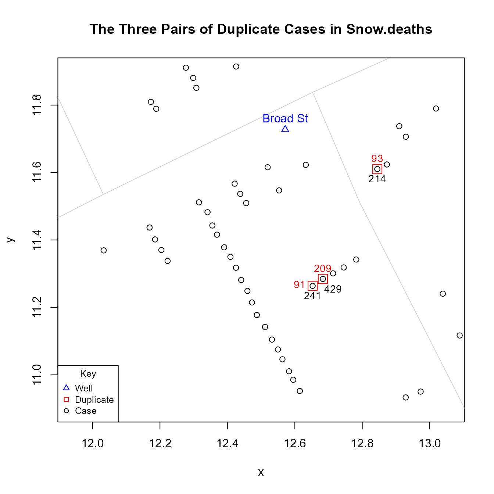
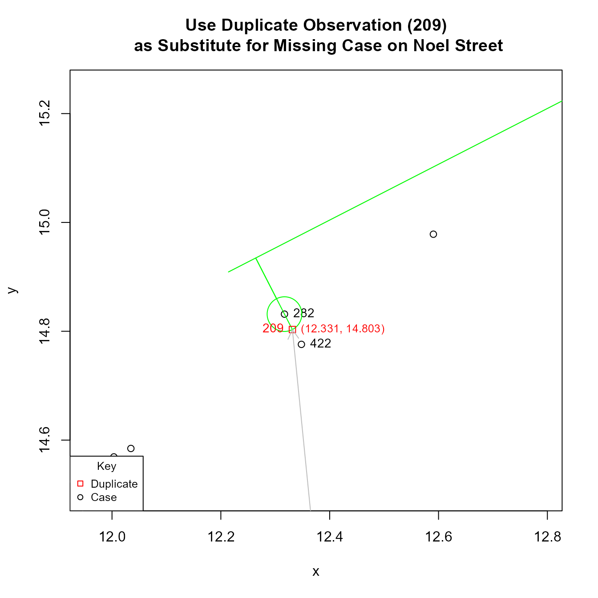
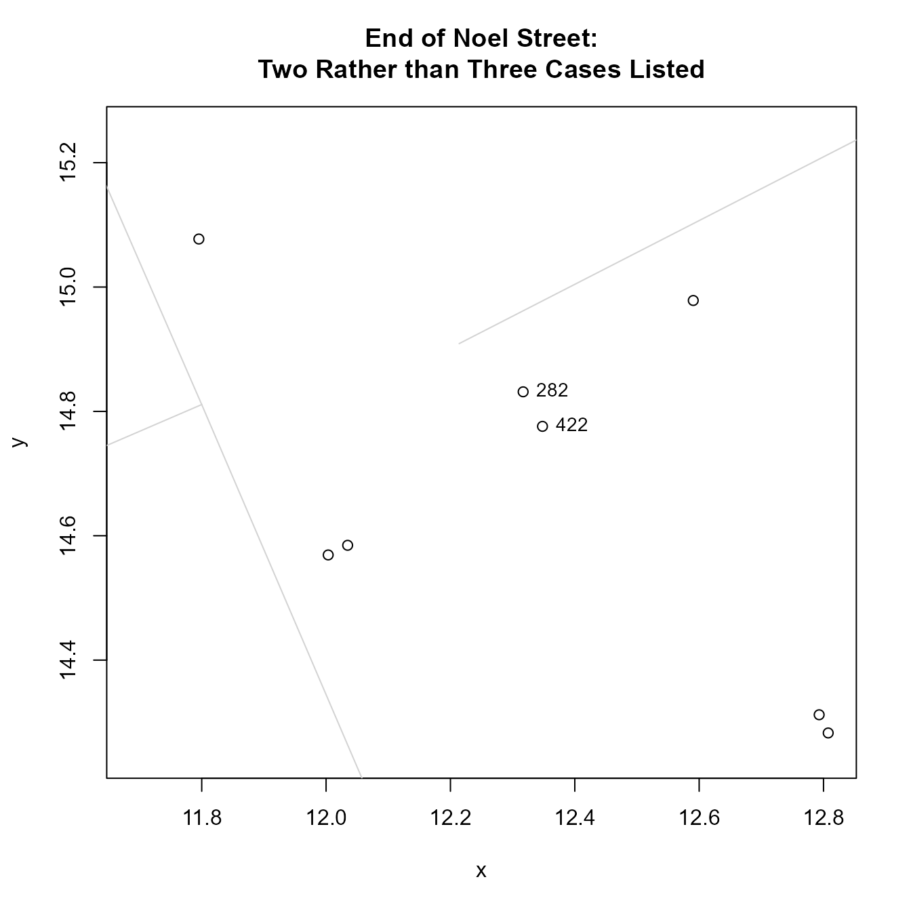
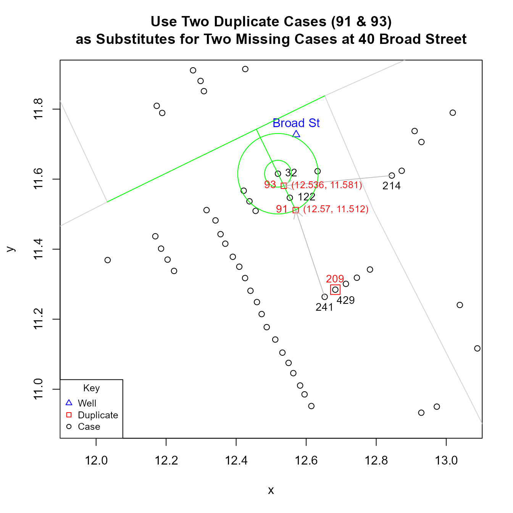

Duplicate and Missing Cases in Snow.deaths
Peter Li
2025-04-09
Source:vignettes/Snow_deaths-duplicates.Rmd
Snow_deaths-duplicates.RmdJohn Snow’s map of the 1854 Cholera outbreak in London, published in
his 1855 book On The Mode Of Communication Of Cholera and
reprinted in Edward Tufte’s 1997 Visual Explanations: Images and
Quantities, Evidence and Narrative, records 578 cases. However,
while the Snow.deaths data set also lists 578 cases, only
575 are unique: there are three pairs of cases that have identical “x”
and “y” coordinates: 1) 93 and 214; 2) 91 and 241; and 3) 209 and
429.
library(HistData)
duplicates <- Snow.deaths[(duplicated(Snow.deaths[, c("x", "y")])), ]
duplicates.id <- lapply(duplicates$x, function(i) {
Snow.deaths[Snow.deaths$x == i, "case"]
})
Snow.deaths[unlist(duplicates.id), ]
#> case x y
#> 93 93 12.84460 11.61027
#> 214 214 12.84460 11.61027
#> 91 91 12.65285 11.26382
#> 241 241 12.65285 11.26382
#> 209 209 12.68321 11.28437
#> 429 429 12.68321 11.28437An expedient solution would be to copy the data set and recode the data with the following values:
Snow.deaths2 <- Snow.deaths
fix <- data.frame(x = c(12.56974, 12.53617, 12.33145), y = c(11.51226, 11.58107, 14.80316))
Snow.deaths2[c(91, 93, 209), c("x", "y")] <- fixFor those interested, a detailed explanation of how these numbers were derived follows.
The reason why duplicate coordinates are likely to be coding errors is that the primary aim of the data is to replicate Snow’s map. In the high resolution map, the number of cases at an individual address are stacked as horizontal bars. This means that there should not be any cases with duplicate coordinates.
{kind=link}
The six points in question are found at two locations along Cambridge Street. Cambridge Street lies on the right side of the figure below and runs in a roughly North-South direction. It intersects Broad Street, which lies at the top of the figure and runs in a roughly East-West direction. The two streets intersect near the Broad Street pump.

Finding a plausible and reasonable solution to this problem is made
easier by the fact that a comparison of the data in Snow’s map and those
in Snow.deaths data set reveals that, at two different
locations, three cases or “bars” are unaccounted for in Snow.deaths.
The first location is 40 Broad Street, which lies just southwest
(below and left) of well. It is the accepted home of patient zero.
Snow.deaths lists two cases, 32 and 122, but Snow’s map
shows four.

The second location is at the end of Noel Street, which is north of
Broad street one block south of Oxford Street at the intersection with
Berwick Street. Here, Snow.deaths lists two cases, 282 and
422, but Snow’s map shows three.

As a potential solution, one could use the three duplicates to fill
in for the three “missing” observations in Snow.data. What makes this
solution plausible is that the Snow.deaths data are used
primarily as a way to visually replicate Snow’s map. This means that,
with the exception of cases that represent “addresses” (i.e., cases
directly adjacent to a street), the coordinate locations of other points
are not as important: they do not represent the location of cases; they
are simply a way to visually “stack” cases at an address. So moving
duplicate points to fill in for missing observations should not be
objectionable.
To find a reasonable solution that is more systematic and less arbitrary, one could use simple geometric interpolation. Using one of the observed cases as a point of reference, possible locations will be found along the line that is orthogonal to the street (i.e., -1 / slope of street segment) and passes through that reference point. The specific location along the orthogonal will be a function of the Euclidean distance between observed points. For example, to put a point between two observed points, locate it on the orthogonal line at half the distance from the reference point; to put a point just beyond two observed points, use 1.5 times the distance. (In practice, the orthogonal lines for different observed points at a given address are not identical: they have the same slope but different intercepts. However, for the cases in question, the difference between these intercepts is very small and the orthogonal lines are visually indistinguishable).
Essentially, this means finding the coordinates of the point of intersection between a circle, whose radius represents the desired multiple of the Euclidean distance between observed points, and a line which posses through the center of the circle, which represent the point of reference. Doing so boils down to solving a quadratic equation. The two formulas below were used to compute the solution.
quadratic <- function(a, b, c) {
root1 <- (-b + sqrt(b^2 - 4 * a * c)) / (2 * a)
root2 <- (-b - sqrt(b^2 - 4 * a * c)) / (2 * a)
c(root1, root2)
}
interpolatedPoints <- function(case, radius.multiplier = 0.5, orthogonal.intercept) {
p <- Snow.deaths[case, "x"]
q <- Snow.deaths[case, "y"]
# extant.point.distance is the Euclidean distance between observed points
r <- radius.multiplier * extant.point.distance
m <- orthogonal.slope
b <- orthogonal.intercept
A <- (m^2 + 1)
B <- 2 * (m * b - m * q - p)
C <- (q^2 - r^2 + p^2 - 2 * b * q + b^2)
quadratic(A, B, C)
}Using these equations and the procedure described above, I get the following results. For the two missing cases at 40 Broad Street:
 For the one missing case on Noel Street: